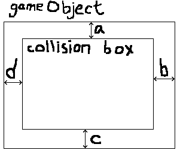

Introduction
FriceEngine is an easy, light, native game engine, running mainly on JVM.
- Why easy?
- A flappy bird game uses only 56 lines of code.
Why light?
- The release build jar is about 1.6mb (with a 1mb Kotlin runtime) only.
- All you have to do is import the jar into your project.
Why native?
- This engine is completely platform-independent.
Installation
With IntelliJ IDEA
AppVeyor is used to automating the build of FriceEngine.
Status:
- Download the jar here
- Create or open a project
- Import the jar into your project
With Eclipse
AppVeyor is used to automating the build of FriceEngine.
Status:
- Download the jar here
- Create or open a project
- Import the jar into your project
With Gradle/Maven/SBT
Newest version: 
View instructions on the JitPack website
Getting Started
This chapter shows the most basic usage of FriceEngine.
Creating a window
First we need to create a game window.
import org.frice.Game;
import static org.frice.Initializer.launch;
public class MyGame extends Game {
public static void main(String[] args) {
launch(MyGame.class);
}
}
import org.frice.game.Game
import org.frice.Initializer.launch
class MyGame : Game() {
}
fun main(args: Array<String>) = launch(MyGame::class.java)
import org.frice.game._
object MyGame extends Game {
def main(args: Array[String]): Unit =
Initializer.launch(MyGame)
}
You should create a class extending the org.frice.Game class.
This class has an optional constructor parameter, which will be introduced later.
We invoke the empty one first.
For convenience, the Scala version uses object instead of class because we want an easier way to write a main function.
We invoke the Initializer.launch method in the main function and pass the class of your game class to it.
You can now run the main function to see if it successfully creates a window.
When you try to close the window, you're expected to see an alert window that confirms you to close it.
About GameFX
For JVM, alternatively, you can use org.frice.GameFX instead of org.frice.Game.
GameFX draws the game window using JavaFX, which is often considered better.
import org.frice.GameFX;
import static org.frice.Initializer.launchFx;
public class MyGame extends GameFX {
public static void main(String[] args) {
launchFx(MyGame.class);
}
}
import org.frice.game.GameFX
import org.frice.Initializer.launchFx
class MyGame : GameFX() {
}
fun main(args: Array<String>) = launchFx(MyGame::class.java)
import org.frice.game._
object MyGame extends GameFX {
def main(args: Array[String]): Unit =
Initializer.launchFx(MyGame)
}
Here's a brief comparison between Swing's Game and JavaFX's GameFX (these features are differently implemented between Swing and JavaFX).
| Feature | Swing | JavaFX |
|---|---|---|
| Life cycle | √ | √ |
| Dialogs | √ | √ |
| Cursor overriding | √ | √ |
| Screenshot | √ | √ |
| Buttons | √ | √ |
| Full screen | √ | √ |
| Always on top | √ | √ |
| Text font/size | √ | √ |
| Multi-instances | √ | × |
| Resizability | √ | √ |
| Rotate animation | √ | × |
| Key listener | √ | √ |
| Text measuring | √ | √ |
These features are differently implemented in Swing/JavaFX.
Since this project is still in progress, the unsupported features will soon be available.
Implementing lifecycle methods
FriceEngine uses lifecycle methods to control it's behavior.
@Override
public void onInit() {
}
override fun onInit() {
}
override def onInit(): Unit = {
}
For example, onInit is a method invoked before the window is created,
and if you override onInit, you can do some initializations (like, customizing the window's property).
Here's a table of the lifecycle methods.
| Method | Usage |
|---|---|
onInit() |
Invoked before game window created |
onLastInit() |
Invoked before starting refreshing |
onExit() |
Invoked while exiting |
onRefresh() |
Invoked after game window is refreshed, if not paused) |
onMouse(OnMouseEvent) |
Invoked when a mouse event arrives(clicking, moving, pressing, etc) |
onLoseFocus() |
Invoked when game window blurs |
onFocus() |
Invoked when game window gets focus |
customDraw(FriceDrawer) |
Invoked after everything is drawn |
The FriceDrawer refers to org.frice.platform.FriceDrawer,
which has some similar functions of java.awt.Graphics2D.
Customizing the window
You can customize the game window in the onInit method.
Hiding fps
setShowFPS(false);
showFPS = false
setShowFPS(false)
If you don't want to display the fps you can use this code.
Customizing window size
setSize(100, 100);
// or
setSize(new Dimension(100, 100));
setSize(100, 100)
// or
size = Dimension(100, 100)
setSize(100, 100)
// or
setSize(new Dimension(100, 100))
You can customize the window size by invoking setSize.
The first argument refers to the width, and the second refers to the height.
Customizing window location
setLocation(100, 100);
// or
setLocation(new Point(100, 100));
setLocation(100, 100)
// or
location = Point(100, 100)
setLocation(100, 100)
// or
setLocation(new Point(100, 100))
You can customize the window size by invoking setLocation.
The first argument refers to the distance to the left side of the screen, and the second refers to the distance to the top of the screen.
Customizing the bounds
import java.awt.Rectangle;
setBounds(100, 100, 100, 100);
// or
setBounds(new Rectangle(100, 100, 100, 100));
import java.awt.Rectangle
setBounds(100, 100, 100, 100)
// or
bounds = Rectangle(100, 100, 100, 100)
import java.awt.Rectangle
setBounds(100, 100, 100, 100)
// or
setBounds(new Rectangle(100, 100, 100, 100))
The two properties mentioned above can be set at the same time.
The four parameters refer to the width, the height, the distance to the left side of the screen, and the distance to the top of the screen respectively.
Changing color when lose focus
setLoseFocusChangeColor(false);
loseFocusChangeColor = false
setLoseFocusChangeColor(false)
FriceEngine automatically darken the game screen when lose focus. If you don't want to see that, you can use this code.
Of course, if you expect it to happen, replace false with true.
Changing title text
setTitle("Your awesome title");
title = "Your awesome title"
setTitle("Your awesome title")
This changes the window title.
It's a method of JFrame on JVM, but it's guaranteed to work.
Cancelling the confirm window
As you see, there's a confirm window when you click the exit button that might be a little noisy.
@Override
public void onExit() {
System.exit(0);
}
override fun onExit() {
System.exit(0)
}
override def onExit(): Unit = System.exit(0)
This happens in Game.onExit.
To cancel it you can override it, and exit directly.
If you don't call System.exit(0), you cannot close the window through clicking the exit button.
If you invoke super.onExit(), the confirm window will still appear, so you might not invoke it.
Always on top
You can make your game window always on top by using
setAlwaysTop(true);
isAlwaysTop = true
setAlwaysTop(true)
You can change the parameter to false, to disable always on top.
Full screen
You can make your game window full screen by using
setFullScreen(true);
isFullScreen = true
setFullScreen(true)
You can change the parameter to false, to disable full screen.
Now you have some basic knowledge about FriceEngine. It's time to create real games with it!
Creating Games
FriceEngine manages game objects through FObjects.
All images, rectangles, ovals, texts, buttons appears on the screen are called "Object",
which corresponds to FObject in codes.
Resources like colors, shapes and images are treated as FResources.
FObjects may hold some FResources, i.e. an image object (ImageObject, which extends FObject) holds an image resource (ImageResource, which extends FResource) (will be explained later).
Creating simple resources
Color resources
import org.frice.resource.graphics.ColorResource;
import java.awt.Color;
ColorResource colorResource0 = new ColorResource(0xFF00FF);
ColorResource colorResource1 = new ColorResource("FF00FF");
ColorResource colorResource2 = new ColorResource(new Color(...));
import org.frice.resource.graphics.ColorResource
import java.awt.Color
val colorResource0 = ColorResource(0xFF00FF)
val colorResource1 = ColorResource("FF00FF")
val colorResource2 = ColorResource(Color(...))
import org.frice.resource.graphics.ColorResource
import java.awt.Color
val colorResource0 = new ColorResource(0xFF00FF)
val colorResource1 = new ColorResource("FF00FF")
val colorResource2 = new ColorResource(new Color(...))
This is a simple example of creating a color resource.
You can either pass an integer, a string, or a java.awt.Color object to the constructor.
But in most cases, we use some public static final objects, like:
GREEN, BLUE, GRAY, DARK_GRAY, LIGHT_GRAY, WHITE, RED, BLACK, CYAN, MAGENTA, YELLOW, SHIT_YELLOW, ORANGE, PINK
and so on.
Simple image resources
import org.frice.resource.image.ImageResource;
ImageResource imageResource = ImageResource.fromPath("./1.png");
import org.frice.resource.image.ImageResource
val imageResource = ImageResource.fromPath("./1.png")
import org.frice.resource.image.ImageResource
val imageResource = ImageResource.fromPath("./1.png")
We can create image resources either by invoking the constructors of the subclasses of ImageResource or by invoking the factory methods.
Here's a list of the factory methods:
| Method | Usage |
|---|---|
fromImage(image: FriceImage) |
Creates an image from a FriceImage |
create(image: FriceImage) |
Alias of fromImage |
fromPath(path: String) |
Creates an image from file path |
fromWeb(url: String) |
Creates an image from url as path |
empty() |
Creates an empty image |
emptyFx() |
Creates an empty image for JavaFX |
import org.frice.resource.image.FileImageResource;
import org.frice.resource.image.WebImageResource;
ImageResource fileImageResource = new FileImageResource("./1.png");
ImageResource webImageResource = new WebImageResource("https://icela.github.io/images/logo.png");
import org.frice.resource.image.FileImageResource
import org.frice.resource.image.WebImageResource
val fileImageResource = FileImageResource("./1.png")
val webImageResource = WebImageResource("https://icela.github.io/images/logo.png")
import org.frice.resource.image.FileImageResource
import org.frice.resource.image.WebImageResource
val fileImageResource = new FileImageResource("./1.png")
val webImageResource = new WebImageResource("https://icela.github.io/images/logo.png")
And here's a simple example of using the FileImageResource and WebImageResource.
Creating objects
As mentioned above, FriceEngine manages games through "object"s. Here we'll see how to create "object"s.
Shape objects
A "shape object" refers to instances of ShapeObject class.
It represents objects which are simply a geometric shape, like rectangles or circles.
ShapeObject is a subclass of FObject.
ShapeObject obj1 = new ShapeObject(ColorResource.DARK_GRAY, new FOval(50, 50));
ShapeObject obj2 = new ShapeObject(ColorResource.DARK_GRAY, new FRectangle(50, 50), 100, 100);
val obj1 = ShapeObject(ColorResource.DARK_GRAY, FOval(50.0, 50.0))
val obj2 = ShapeObject(ColorResource.DARK_GRAY, FRectangle(50.0, 50.0), 100.0, 100.0)
val obj1 = new ShapeObject(ColorResource.DARK_GRAY, new FOval(50, 50))
val obj2 = new ShapeObject(ColorResource.DARK_GRAY, new FRectangle(50, 50), 100, 100)
To create a shape object we simply invoke it's constructor.
We need to pass a ColorResource, an FShape, and two optional Doubles to specify it's location.
FShape can be FOval, FRectangle, and FCircle.
Feel free to change the ColorResources or Shapes of ShapeObjects at anytime.
You'll see changes on the screen at once.
Image objects
We can also create game objects with images.
Since we have already know how to create images resources, we simply use the resources we created above.
ImageObject obj1 = new ImageObject(new FileImageResource("test.png"), 100, 100);
val obj1 = ImageObject(FileImageResource("test.png"), 100.0, 100.0)
val obj1 = new ImageObject(new FileImageResource("test.png"), 100, 100)
We need to pass an ImageResource, and two optional Doubles to specify It's location, just like ShapeObject.
This is very similar to ShapeObject.
Feel free to change the ImageResources of ImageObjects at anytime.
You'll see changes on the screen at once.
Animations
We can add animations to game objects by invoking addAnim(your animation),
and stop all the animations by invoking stopAnims().
Simple move
For instance, a simple uniform motion can be represented by a SimpleMove,
the two parameters are the speed on x axis and y axis respectively.
import org.frice.anim.move.SimpleMove;
gameObject.addAnim(new SimpleMove(100, 100));
import org.frice.anim.move.SimpleMove
gameObject.addAnim(SimpleMove(100, 100))
gameObject.anims += SimpleMove(100, 100) // alternative
import org.frice.anim.move.SimpleMove
gameObject.addAnim(new SimpleMove(100, 100))
Change the parameter and run to better understand those parameters.
If you prefer using Doubles rather than Ints, use AccurateMove instead of SimpleMove.
Accelerate Move
A simple accelerate motion can be represented by a AccelerateMove,
the two parameters are the acceleration on x axis and y axis respectively.
import org.frice.anim.move.AccelerateMove;
gameObject.addAnim(new AccelerateMove(10, 10));
import org.frice.anim.move.AccelerateMove
gameObject.addAnim(AccelerateMove(10.0, 10.0))
gameObject.anims += AccelerateMove(10.0, 10.0) // alternative
import org.frice.anim.move.AccelerateMove
gameObject.addAnim(new AccelerateMove(10, 10))
The number 10 in the code above stands for "10 pixels per second squared".
Rotating
You can make your game object rotate x radian per second by using this:
import org.frice.anim.rotate.SimpleRotate;
gameObject.addAnim(new SimpleRotate(x));
import org.frice.anim.rotate.SimpleRotate
gameObject.addAnim(SimpleRotate(x))
gameObject.anims += SimpleRotate(x) // alternative
import org.frice.anim.rotate.SimpleRotate
gameObject.addAnim(new SimpleRotate(x))
For example, if you want to turn your game object around per second, you can use the code above and replace x with Math.PI * 2.
Scaling
You can make your game object become larger or smaller by scaling them.
If you want your game object to become x times larger per second horizontally and y times larger per second vertically, you can use:
gameObject.addAnim(new SimpleScale(x, y));
gameObject.addAnim(SimpleScale(x, y))
gameObject.anims += SimpleScale(x, y) // alternative
gameObject.addAnim(new SimpleScale(x, y))
Collision detection
Use the collides method to check if two game objects are collided:
if (bullet.collides(player)) player.setDied(true);
if (bullet.collides(player)) player.died = true
if (bullet.collides(player)) player.setDied(true)
You may do collision check in the onRefresh method.
Customizing collision box
FriceEngine detects collision by checking if the two objects' collision box are overlapped with each other.
All collision boxes are just rectangles.
Each game object has a collision box, they're by default themselves (say, the x, y location and the size (width, height) of the collision boxes are equaled to the game objects).
Sometimes we want to change the collision boxes, either to make it another game object or to make it just smaller.
To do this, we need to use the setCollisionBox method.
gameObject1.setCollisionBox(gameObject2);
gameObject1.collisionBox = gameObject2
gameObject1.setCollisionBox(gameObject2)
This will change gameObject1's collision box to gameObject2.
Say, when gameObject2 collides with gameObject3, gameObject1.collides(gameObject3) will return true.
If you don't want to create the gameObject2 -- you just want to use a fixed collision box (location and size never changes), create an object of FQuad.
gameObject1.setCollisionBox(new FQuad(x, y, width, height));
gameObject1.collisionBox = new FQuad(x, y, width, height)
gameObject1.setCollisionBox(new FQuad(x, y, width, height))
And of course, you can change the location or the size of a FQuad by invoking setX, setY, etc.
Sometimes your requirement is even more simple -- you just want the collision box to be smaller.
This is also very easy. You can create a collision box from another collision box, while the former one's location or size always keeps a stable offset.
For example, you want this (metion the a b c d in the image. The code below uses same variable name corresponds to the ones in the image):

And you can create such collision box by using this:
gameObject.smallerBox(a, c, d, b);
gameObject.smallerBox(a, c, d, b)
gameObject.smallerBox(a, c, d, b)
If a == c && b == d, you can use the two-argument one:
gameObject.smallerBox(a, b);
gameObject.smallerBox(a, b)
gameObject.smallerBox(a, b)
If a == c && a == b && b == d, you can use the one-argument one:
gameObject.smallerBox(a);
gameObject.smallerBox(a)
gameObject.smallerBox(a)
So it's possible to do something like this:
gameObject.setCollisionBox(gameObject.smallerBox(5));
gameObject.collisionBox = gameObject.smallerBox(5)
gameObject.setCollisionBox(gameObject.smallerBox(5))
Higher Level Usage
Creating complex resources
Particle resources
TODO
Curve resources
TODO
Complex image resources
PartImageResource and FrameImageResource are based on other ImageResource objects.
TODO
Using customDraw
TODO
Customizing animations
TODO
Misc
Color utils
TODO
File utils
TODO
Alert dialogs
FriceEngine provides handy APIs for creating dialogs.
All the dialog API has got an optional title argument, so plaease don't think there isn't one for it's not shown in the example code.
Showing information
dialogShow("information to show");
dialogShow("information to show", "title");
dialogShow("information to show")
dialogShow("information to show", "title")
dialogShow("information to show")
dialogShow("information to show", "title")
Just look at the code and you know how to use them.
Getting user input
You can also get user input, by asking them a yes-or-no question:
boolean userOpinion = dialogConfirmYesNo("Do you like what you see?");
val userOpinion = dialogConfirmYesNo("Do you like what you see?")
val userOpinion = dialogConfirmYesNo("Do you like what you see?")
Or a question that requires a more specific answer:
String username = dialogInput("What's your name?");
val username = dialogInput("What's your name?")
val username = dialogInput("What's your name?")
Playing music
FriceEngine provides very simple API to play music stored in files.
import org.frice.utils.audio.AudioManager;
AudioManager.play("./1.mp3");
import org.frice.utils.audio.play
play("./1.mp3")
import org.frice.utils.audio.AudioManager
AudioManager.play("./1.mp3")
Supported audio format:
- mp3
- wav
You can replace the path string with a File object.
You can also create an AudioPlayer object to better control the playing of the music
(i.e. start the music later, or stop it while playing).
import org.frice.utils.media.AudioManager;
import org.frice.utils.media.AudioPlayer;
AudioPlayer player = AudioManager.getPlayer("./1.mp3");
// start playing
player.start();
// exit playing
player.exit();
import org.frice.utils.media.getPlayer
val player = getPlayer("./1.mp3")
// start playing
player.start()
// exit playing
player.exit()
import org.frice.utils.media.AudioManager
val player = AudioManager.getPlayer("./1.mp3")
// start playing
player.start()
// exit playing
player.exit()
AudioPlayer extends Thread in Java, so other operations are also allowed.
It's recommended to play short audio in a thread pool, like this.
ThreadPoolExecutor executor = new ThreadPoolExecutor(20, 60, 10,
TimeUnit.SECONDS,
new ArrayBlockingQueue<>(20),
new ThreadPoolExecutor.DiscardPolicy());
// execute
executor.execute(AudioManager.getPlayer("./res/shake.mp3"));
val executor = ThreadPoolExecutor(20, 60, 10,
TimeUnit.SECONDS,
ArrayBlockingQueue<>(20),
ThreadPoolExecutor.DiscardPolicy())
// execute
executor.execute(getPlayer("./res/shake.mp3"))
val executor = new ThreadPoolExecutor(20, 60, 10,
TimeUnit.SECONDS,
new ArrayBlockingQueue<>(20),
new ThreadPoolExecutor.DiscardPolicy())
// execute
executor.execute(AudioManager.getPlayer("./res/shake.mp3"))
Alternatively, you can use the JavaFX media API wrapper, called MediaManager.
import javafx.scene.media.MediaPlayer;
import org.frice.utils.media.MediaManager;
MediaPlayer player = MediaManager.getMediaPlayer("./res/bgm.mp3");
player.play();
import org.frice.utils.media.getMediaPlayer
val player = getMediaPlayer("./res/bgm.mp3")
player.play()
import org.frice.utils.media.MediaManager
val player = MediaManager.getMediaPlayer("./res/bgm.mp3")
player.play()
MediaPlayer is provided by JavaFX, it has a lot of useful APIs.
And of course, you can play them directly:
import org.frice.utils.media.MediaManager;
MediaManager.playMedia("./res/bgm.mp3");
import org.frice.utils.media.playMedia
playMedia("./res/bgm.mp3")
import org.frice.utils.media.MediaManager
MediaManager.playMedia("./res/bgm.mp3")
Database
FriceEngine provides a key-value based database, and there're two implementations.
Preference
This is the recommended database implementation.
import org.frice.utils.data.Preference;
Preference preference = new Preference("./save.properties");
preference.insert("key", "value");
preference.insert("key2", true);
String value = (String) preference.query("key", "default value");
boolean value2 = (boolean) preference.query("key", false);
import org.frice.utils.data.Preference
val preference = Preference("./save.properties")
preference.insert("key", "value")
preference.insert("key2", true)
val value = preference.query("key", "default value") as String
val value2 = preference.query("key", false) as Boolean
import org.frice.utils.data.Preference
val preference = new Preference("./save.properties")
preference.insert("key", "value")
preference.insert("key2", true)
val value = preference.query("key", "default value").asInstanceOf[String]
val value2 = preference.query("key", false).asInstanceOf[Boolean]
The usage is very simple, and it's possible to operate an Int, String or a Boolean directly.
If you hate casting, you can use the generic query -- queryT.
It will recognize your expected type from the default value:
String value = preference.queryT("key", "default value");
boolean value2 = preference.queryT("key2", false);
val value: String = preference.queryT("key", "default value")
val value2: Boolean = preference.queryT("key", false)
val value: String = preference.queryT("key", "default value")
val value2: Boolean = preference.queryT("key", false)
Preference is based on the Java Preference API.
It stores value in a "properties" file.
Additionally, you can use the list() method to get all the key-value pair as a list.
XMLPreference
It provides insert, query and queryT as well as Preference.
import org.frice.utils.data.XMLPreference;
XMLPreference preference = new XMLPreference("./save.xml");
import org.frice.utils.data.XMLPreference
val preference = XMLPreference("./save.xml")
import org.frice.utils.data.XMLPreference
val preference = new XMLPreference("./save.xml")
XMLPreference is based on the Java XML API.
It stores value in a "xml" file.
Additionally, you can use the getFile() method to get the file that stores the data.
Building FriceEngine
You can build the FriceEngine yourself by the following command if JDK is installed:
$ git clone https://github.com/icela/FriceEngine.git
$ cd FriceEngine/
# You have JDK only
$ chmod a+x ./gradlew
$ ./gradlew fatJar
$ ./gradlew sourcesJar
# You have gradle executable in $PATH, you can build it with
$ gradle fatJar
$ gradle sourcesJar
And you can find the build result under build/libs/.
The library jar is engine-all-[version].jar, and the source jar is engine-src-[version].jar.
GitHub Stuffs
Release
See GitHub releases.
FriceEngine publishes its newest version here.
Issues
See GitHub issues.
When there's feature request/bug report/cleanup request, an issue will be opened here, and a milestone will be distributed to it.
Sub projects
- on JVM
Swing and JavaFX are both supported.


- Kotlin DSL


- on CLR


- in Lisp


- in Ruby


- Demos (for various languages)


- Designer


Milestones
See GitHub milestones.
Since 1.7.0, FriceEngine will have a milestone corresponds to every version. Issues will be distributed a version to be solved.